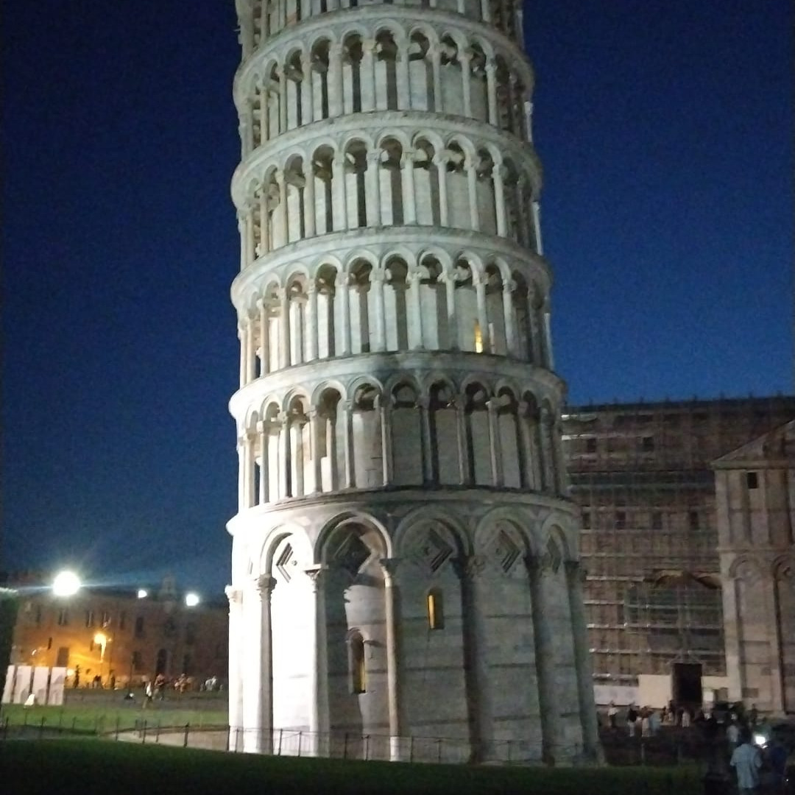
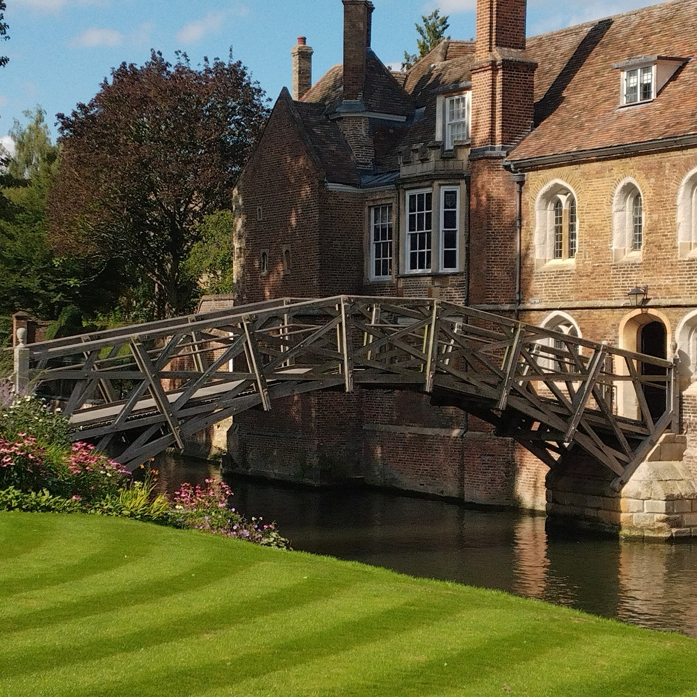
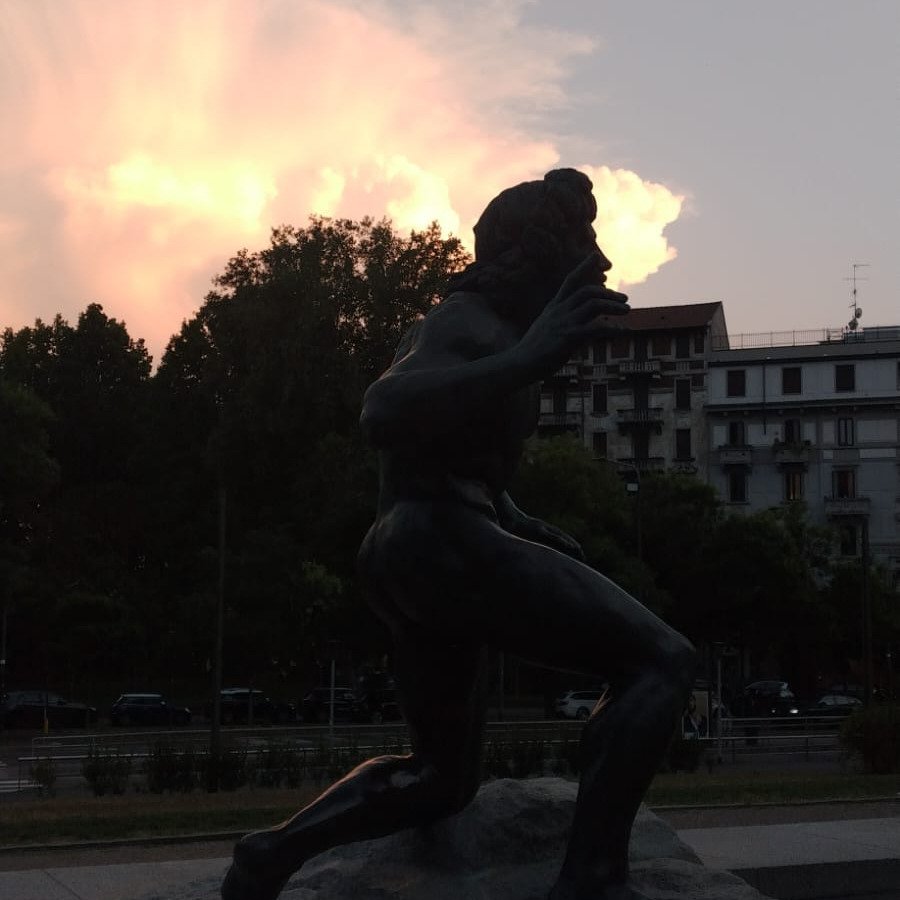
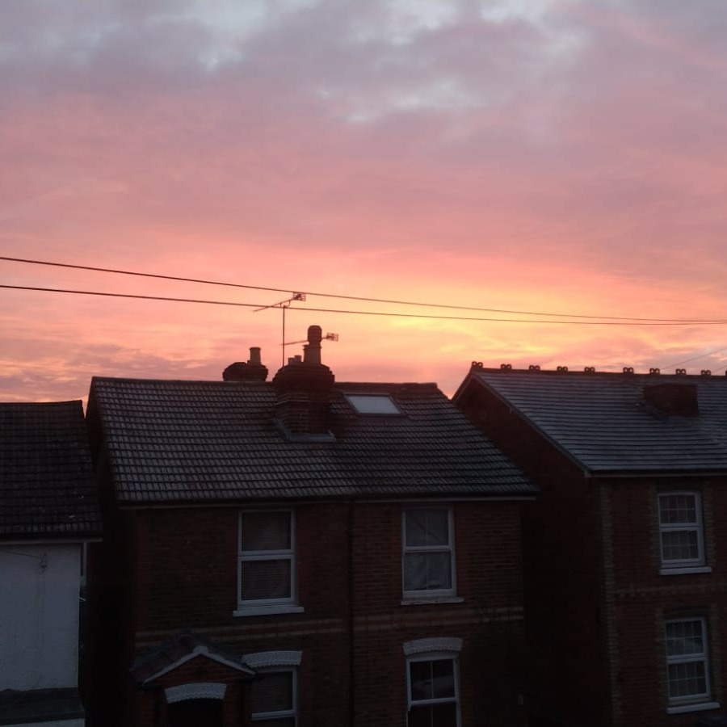

Capturing fleeting moments of existence
Guildford, 8 October 2025









Theoretical physicist and quantum scientist. Understanding is the work. Creating is the joy.
Guildford, 8 October 2025




Guildford, 27 July 2025
I have spent a wonderful few days in Pisa giving a talk and exploring quantum estimation theory with Francesco Albarelli (Scuola Normale Superiore) and Dominic Branford (University of Florence). Fantastic science, great people, and an inspiring setting.

Virginia Water, 21 February 2025
Today, my colleagues and I have released a new preprint that could reshape the foundations of quantum sensing, one of the three pillars of quantum technologies: arXiv:2502.14817.
From the choice of ignorance priors and loss functions to the practical implementation of adaptive algorithms with optimal estimators, POVMs, and errors, this tutorial-style contribution provides a clear and cohesive formulation of global quantum sensing, metrology, and estimation through Bayesian principles of symmetry and geometry.
Still unsure? Explore ongoing work on practical sensing platforms: arXiv:2410.10615, arXiv:2310.02771, and arXiv:2204.11816, where the concepts of location-isomorphic parameter and symmetry-informed estimation, on which our work rests, are experimentally validated.
If you have an experimental platform, all you need to do is specify the setup and follow these principles. The framework we present is adaptable to a wide range of sensing architectures, offering a systematic approach to optimal estimation and error reduction.
This work is the result of an international collaboration across five universities: Siegen (Germany), Nottingham (UK), Exeter (UK), La Laguna (Spain), and Surrey (UK).